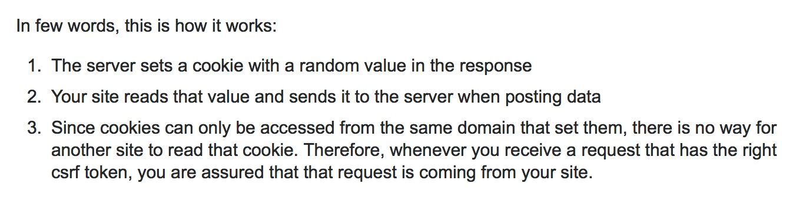

Django问题集锦
Csrf验证
需要在表单中加入`csrfmiddlewaretoken`或者在http头中`X-CSRFToken`请求头，具体值来自cookie当中的`csrftoken`Django允许跨域
安装
django-cors-headerspip install django-cors-headers在setting.py中增加如下代码
INSTALLED_APPS = [ ...
'corsheaders'，
...
]
MIDDLEWARE_CLASSES = (
...
'corsheaders.middleware.CorsMiddleware',
'django.middleware.common.CommonMiddleware', # 注意顺序
...
)
#跨域增加忽略
CORS_ALLOW_CREDENTIALS = True
CORS_ORIGIN_ALLOW_ALL = True
CORS_ORIGIN_WHITELIST = (
'*'
)
CORS_ALLOW_METHODS = (
'DELETE',
'GET',
'OPTIONS',
'PATCH',
'POST',
'PUT',
'VIEW',
)
CORS_ALLOW_HEADERS = (
'XMLHttpRequest',
'X_FILENAME',
'accept-encoding',
'authorization',
'content-type',
'dnt',
'origin',
'user-agent',
'x-csrftoken',
'x-requested-with',
'Pragma',
)axios 默认支持csrf功能，需要修改其属性和服务器返回的csrfcookiename一致
#Django返回的cookie中的csrf字段名字为csrftoken,会从request的header中读取X-CSRFTOKEN来校验csrf axios.defaults.xsrfHeaderName = "X-CSRFTOKEN";
axios.defaults.xsrfCookieName = "csrftoken";如果axios要访问的接口和前端页面属于跨域状态，那么axios无法读取xsrfCookie,则也无法设置xsrfHeader,此时则需要后端将csrftoken放入response中而不是cookie当中，axios在request阻截器中手动设置xsrfHeader

Django使用django-rest-framework 单独某个view取消csrf验证
需要两步：
- 关掉django的csrf验证,利用
@csrf_exempt(针对function view)，或者用@method_decorator(csrf_exempt, name="dispatch")(针对class view) - 关掉drf框架的验证，在class view 中将
authentication_classes设置为BasicAuthentication
@method_decorator(csrf_exempt, name="dispatch") class login(views.APIView):
authentication_classes = (BasicAuthentication,)
def post(self, request, *args, **kwargs):
username = request.data.get("username")
password = request.data.get("password")
user = auth.authenticate(request, username=username, password=password)
if user is not None:
auth.login(request, user)
return ErosResponse()
else:
return ErosResponse(status=ErosResponseStatus.INVALID_USER)- 关掉django的csrf验证,利用
使用
OrderFilter过程中遇到OrderingFilter object has no attribute 'filter_queryset':需要使用从rest_framework.filters中导入的OrderingFilter，而不是django_filters
from django_filters.rest_framework import DjangoFilterBackend from rest_framework.filters import OrderingFilterDjango链接Mysql 8.0 出现错误(1045:Access denied for user 'root'@'localhost' (using password: NO) 的一种解决方法
出现此错误的原因是MySQL8.0 密码的加密方式发生了改变，采用了cha2加密方法，我们可以利用下面的语句将MySQL的密码加密方式修改为之前的版本
mysql -u root -p use mysql；
ALTER USER 'root'@'localhost' IDENTIFIED WITH mysql_native_password BY 'newpassword';
FLUSH PRIVILEGES;Django-Filter自定义查询过滤字段
from django_filters import FilterSet from django_filters import CharFilter
class TagFilter(FilterSet):
##自定义search字段
search = CharFilter(name="name", lookup_expr="contains")
class Meta:
model = Tag
fields = {
'id': ['exact'],
'name': ['exact', 'contains'],
'search': ['exact'],
}具体Django-Filter的用法可以参考文档
DRF的OrderingFilter默认排序
filter_backends = (DjangoFilterBackend, OrderingFilter) ordering_fields = ('id', 'hot')
ordering = ('-hot',)Django runserver指定setting配置
python3 manage.py runserver 0.0.0.0:8000 --settings=OrionGraphQL.settings.dev

利用GitLab提供的GitLab-CI以及GitLab-Runner搭建持续集成/部署环境
简介
GitLab
是一套基于Ruby开发的开源Git项目管理应用，其提供的功能和Github类似，不同的是GitLab提供一个GitLab CE社区版本，用户可以将其部署在自己的服务器上，这样就可以用于团队内部的项目代码托管仓库。
GitLab CI
是GitLab 提供的持续集成服务(从8.0版本之后，GitLab CI已经集成在GitLab中了)，只要在你的仓库根目录下创建一个.gitlab-ci.yml 文件， 并为该项目指派一个Runner，当有合并请求或者Push操作时，你写在.gitlab-ci.yml中的构建脚本就会开始执行。
GitLab Runner
是配合GitLab CI进行构建任务的应用程序，GitLab CI负责yml文件中各种阶段流程的执行，而GitLab Runner就是具体的负责执行每个阶段的脚本执行，一般来说GitLab Runner需要安装在单独的机器上通过其提供的注册操作跟GitLab CI进行绑定，当然，你也可以让其和GitLab安装在一起，只是有的情况下，你代码的构建过程对资源消耗十分严重的时候，会拖累GitLab给其他用户提供政策的Git服务。
持续集成/部署环境
持续集成是程序开发人员在频繁的提交代码之后，能有相应的环境能对其提交的代码自动执行构建(Build)、测试(Test),然后根据测试结果判断新提交的代码能否合并加入主分支当中,而持续部署也就是在持续集成之后自动将代码部署(Deploy)到生成环境上
开启GitLab CI功能
在GitLab 8.0版本之后,你可以通过如下两部启用GitLab CI功能
- 新建一个
.gitlab-ci.yml文件在你项目的根目录 - 为你的项目配置一个GitLab Runner
配置一个.gitlab-ci.yml文件
.gitlab-ci.yml文件是用来配置GitLab CI进行构建流程的配置文件，其采用YAML语法,所以你需要额外注意要用空格来代替缩进，而不是Tabs。下面通过我自己项目中的.gitlab-ci.yml文件来具体介绍其规则
stages:
- init
- check
- build
- deploy
cache:
key: ${CI_BUILD_REF_NAME}
paths:
- node_modules/
- dist/
#定义一个叫init的Job任务
init:
stage: init
script:
- cnpm install
#master_check Job:检查master分支上关键内容
master_check:
stage: check
script:
- echo "Start Check Eros Config ..."
- bash check.sh release
only:
- master
#dev_check Job: 检查dev分支上关键内容
dev_check:
stage: check
script:
- echo "Start Check Eros Config ..."
- bash check.sh debug
only:
- dev
js_build:
stage: build
script:
- eros build
master_deploy:
stage: deploy
script:
- bash deploy.sh release
only:
- master
dev_deploy:
stage: deploy
script:
- bash deploy.sh debug
only:
- dev
在上面的例子中，我们利用stages关键字来定义持续构建过程中的四个阶段init、chec、build、deploy
关于GitLab CI中的stages,有如下几个特点:
1. 所有 Stages 会按照顺序运行，即当一个 Stage 完成后，下一个 Stage 才会开始
2. 只有当所有 Stages 完成后，该构建任务 (Pipeline) 才会成功
3. 如果任何一个 Stage 失败，那么后面的 Stages 不会执行，该构建任务 (Pipeline) 失败
然后我们利用caches字段来指定下面将要进行的job任务中需要共享的文件目录,如果没有，每个Job开始的时候，GitLab Runner都会删掉.gitignore里面的文件
紧接着，我们定义了一个叫做init的job，其通过stage字段声明属于init阶段，因此，这个job会第一个执行，我们在这个job当中，执行一些环境的初始化工作。
接下来是check阶段,用来检查代码的一些基础错误(代码规范之类不会被编译器发现的问题)，以及一些配置文件的检查，我将其命名为master_check和dev_check,通过only字段来告诉GitLab CI 只有当对应的分支有push操作的时候才会触发这个job。
然后就是代码的build阶段，由于此阶段不像上个极端，没有需要区分不同分支的命令，所以就只需要定义一个job就够了
最后的deploy，因为不同的分支需要发布到不同的环境，所以依然通过only来区分两个job。
关于GitLab CI中的Jobs,也有如下几个特点:
1. 相同 Stage 中的 Jobs 会并行执行
2. 相同 Stage 中的 Jobs 都执行成功时，该 Stage 才会成功
3. 如果任何一个 Job 失败，那么该 Stage 失败，即该构建任务 (Pipeline) 失败
在我的这个构建任务当中，根据我的业务情况只用到了少许关键字,还有更多的类似于before_script、after_script等关键字，具体的可以参阅GitLab的官方文档
在我们完成.gitlab-ci.yml的流程编写之后，就可以将其放在项目的根目录下，然后push到我们的GitLab上，这时，如果你打开项目首页的Piplines标签页，会发现一个状态标识为pending的构建任务，如下图所示：

这时由于这个构建任务还有找到可用的GitLab Runner来执行其构建脚本，等我们接下来为我们的项目接入GitLab Runner之后，这些任务的状态就会由pendding变成running了
安装GitLab Runner
找一台适合安装GitLab Runner的机器，无论是Windows或者Mac还是Linux都行，最好是那种比较空闲的能24小时开启的机器，我们在GitLab Runner的官网找到我们平台的安装文件，以及对应的安装流程。由于笔者我准备安装GitLab Runner是一台闲置的iMac电脑，因此我就在演示MacOS下GitLab Runner的安装：
GitLab Runner 在macOS和Linux/UNIX下安装流程是一样的，都是直接下载已编译好的二进制包
下载对应GitLab 版本的GitLab Runner
- 如果你的GitLab是10.0之后的版本，GitLab Runner可执行文件改名为
gitlab-runner
sudo curl --output /usr/local/bin/gitlab-runner https://gitlab-runner-downloads.s3.amazonaws.com/latest/binaries/gitlab-runner-darwin-amd64 sudo chmod +x /usr/local/bin/gitlab-runner- 9.0~10.0之间的版本
sudo curl --output /usr/local/bin/gitlab-ci-multi-runner https://gitlab-ci-multi-runner-downloads.s3.amazonaws.com/latest/binaries/gitlab-ci-multi-runner-darwin-amd64 sudo chmod +x /usr/local/bin/gitlab-ci-multi-runner- 9.0 之前,由于9.0之后启用全新的API4接口，所以如果你的GitLab是9.0以前的版本,需要下载下面的版本,否则会导致你的GitLab Runner注册不上
sudo curl --output /usr/local/bin/gitlab-ci-multi-runnerhttps://gitlab-ci-multi-runner-downloads.s3.amazonaws.com/v1.11.1/binaries/gitlab-ci-multi-runner-darwin-amd64 sudo chmod +x /usr/local/bin/gitlab-ci-multi-runner不知道各位有没有注意到上面下载地址链接当中的v1.11.1,这个就是对应的Gitlab Runner,如果你的GitLab是9.0之前的版本，使用GitLab Runner v1.11.1这个版本仍然注册不上，可以尝试使用降几个版本的GitLab Runner,所有GitLab Runner发行的版本可以在GitLab Runner Tags找到
假如你遇到不能通过登录服务器来确定GitLab版本号时，可以通过直接访问gitlab的首页，后面加上help，如下图：

- 如果你的GitLab是10.0之后的版本，GitLab Runner可执行文件改名为
注册GitLab Runner
执行下面命令，
sudo gitlab-ci-multi-runner register如果你的终端提示找不到命令，请通过
export PATH=/usr/local/bin:$PATH将/usr/local/bin目录加入环境变量,或者你遗漏了上面的chmod命令导致文件不可执行。执行完上面的命令之后，会让你输入下面的信息:
- Please enter the gitlab-ci coordinator URL:
- Please enter the gitlab-ci token for this runner:
- Please enter the gitlab-ci description for this runner
- Please enter the gitlab-ci tags for this runner (comma separated):
- Whether to run untagged builds [true/false]:
- Please enter the executor:
其中coordinator URL和token可以在你需要进行持续集成的项目的Runner标签页中找到

description和tags可以自己定义，是否build没有tag的提交这个也是根据你自己的需求来选择，默认是false，executer选择shell填写完成之后如果提示
Registering runner... succeeded表明这个Runner已经被注册成功了，之后你在返回进入项目的Runners页面，会发现下面多了一个处于Active状态的Runner紧接着最后一步，启动我们刚注册的Runner
sudo gitlab-ci-multi-runner start现在，我们切回项目的Pipelines当中，肯定会发现之前处于peding状态的任务已经开始running了，我们可以通过点击这个状态按钮来实时查看每个阶段的输出日志

开启构建状态的邮件提醒
如果你想收到关于每个构建任务的实时状态的邮件，你可以在在项目中的service标签野种启用Build Emails这个服务。

结语
搭建一个快速方便的持续集成、持续部署环境对于项目的开发来说是一个很重要的举措，无论你是采用大名鼎鼎的jenkins还是本文介绍的GitLab CI,它不仅仅可以帮助我们节省大量的时间在调试发布部署当中，也减少了我们因为人为因素导致的发布过程中出现的意外，有效的较低了项目开发当中的风险。
如果你想和我交流，可以关注我的订阅号:


Copyright © 2015 Powered by MWeb, Theme used GitHub CSS.